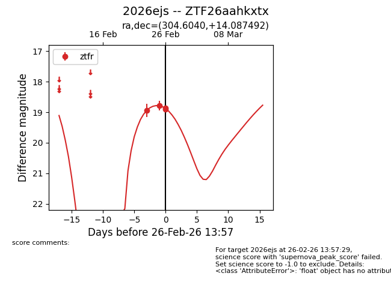
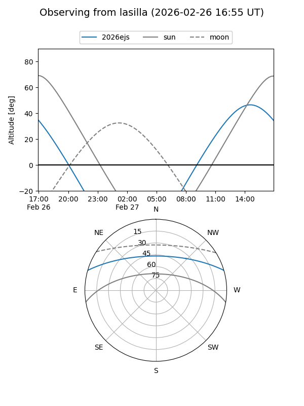
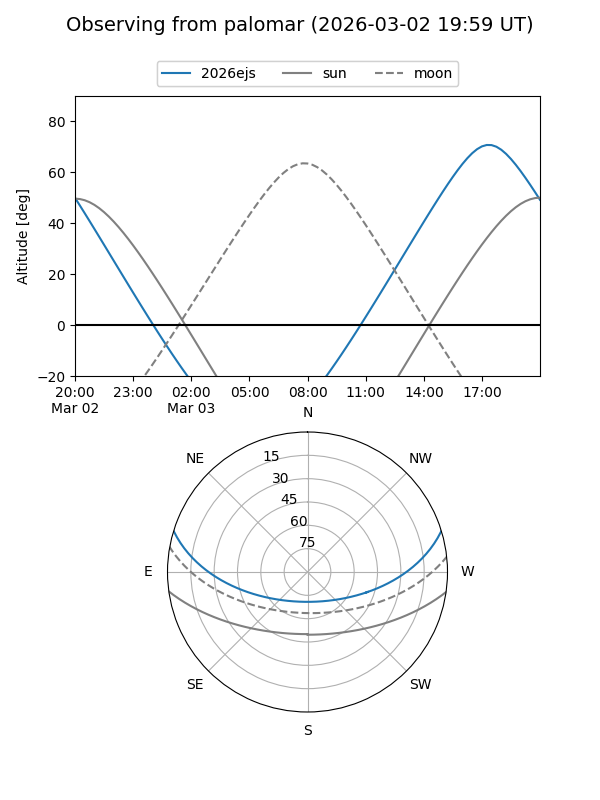
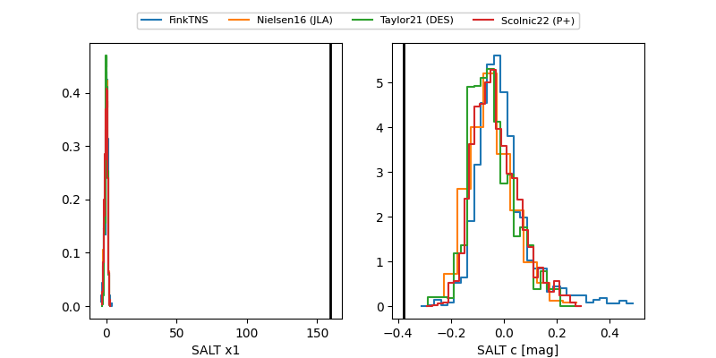

2026ejs
Target 2026ejs at 2026-02-26 13:58
Aliases and brokers:
FINK: link
Lasair: link
ALeRCE: link
TNS: link
YSE: link
alt names
ZTF26aahkxtx (ztf,fink_ztf)
2026ejs (tns,yse)
Coordinates:
equatorial (ra, dec) = 304.6040,+14.08749
equatorial (HMS+DMS) = 20:18:24.97,+14:05:14.97
galactic (l, b) = (55.8273,-12.05259)
Flags:
Photometry:
last ztfr=18.85
4 ztfr detections
Lightcurve

Visibility


Additional plots
